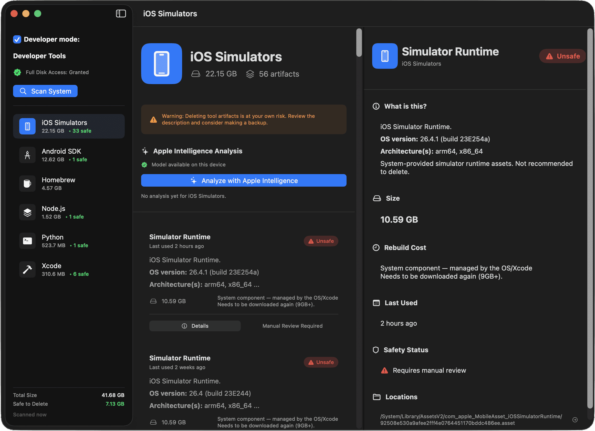

Built with Swift & SwiftUI • macOS 15.6+
Stop Guessing Why Your Disk Is Full
FolderSizeVisualizer transforms generic filesystem analysis into intelligent developer-tool artifact management. See what's really taking up space — Xcode, Simulators, Docker, Node.js — and clean it safely.

10+
Developer Tools
Smart
Deletion
Real-time
Analysis
